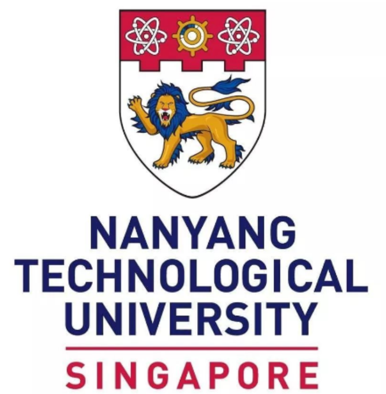
南洋理工大学 · WKWSCI
信息系统硕士 · GPA 4.5/5.0
AI Product Manager Portfolio
熟悉产品全生命周期管理，具备技术研发与项目管理的实战经验，拥有丰富的跨团队协作能力 关注 AI 技术在真实业务场景中的产品化落地，具备用户需求分析、产品方案设计、跨团队协作和数据驱动迭代能力，拥有 AI 项目实战经验，熟练应用 AI 提效工具，致力于将大模型能力转化为可用、可评估、可商业化的产品价值 到岗时间：2026年6月｜可实习 4 个月以上
能力LLM基础理解 · Prompt Engineering · RAG · 微调 · 模型评估 · Agent设计 · AI 安全风险识别
工具LangChain · Chroma · Unsloth · RAGAS · ChatGPT Codex · Copilot · Perplexity
能力用户洞察 · 需求分析 · 竞品分析 · 产品规划 · MVP 定义 · PRD撰写 · 原型设计 · 需求拆解
工具Figma · Axure · 墨刀 · Xmind · 蓝湖
能力数据查询 · 数据清洗 · 数据分析 · 数据可视化 · 产品数据指标 · 模型评估指标 · 数据埋点
工具Python · Excel · SQL · Tableau · D3 · PowerBI · NetworkX
能力需求管理 · Sprint 规划 · 迭代管理 · 排期与资源协调 · 进度跟踪 · 风险管理 · 供应商管理
工具Jira · Confluence · Notion · 禅道 · 飞书 · Teams · Outlook · Google Docs · 钉钉
Education

信息系统硕士 · GPA 4.5/5.0
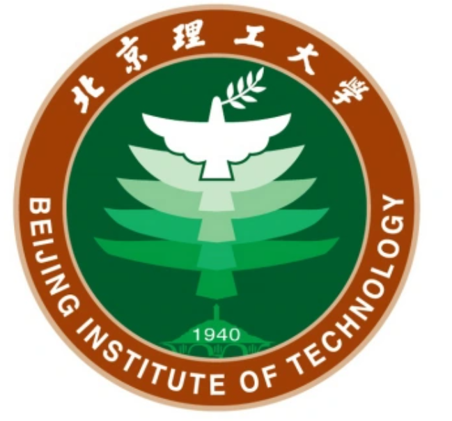
数据科学与大数据技术本科 · GPA 3.4/4.0
Experience
2024.12 - 2025.06
智能座舱产品交付与版本管理：负责 FAW-VM 智能座舱软件产品的需求管理、版本推进与交付协同，累计参与 6 款车型、4 个车机平台、20 个系统版本的项目管理工作，覆盖中国区与欧洲区市场。
产品需求拆解与 SOP 交付：深度参与产品侧工作，管理 100 余个产品需求，负责需求澄清与变更、功能拆解、优先级评估、版本 Roadmap 输出及交付节奏管理，组织项目立项、需求评审、方案宣贯、里程碑制定、联调计划，保障关键功能按计划上线验收。
跨团队协作与供应商管理：协调 10 余个内外部团队、8 家供应商，覆盖产品、研发、测试、设计、前后端、运营及车机平台等角色；通过每日 standup、周例会、需求澄清会和方案宣贯机制，推动多方对齐需求边界、接口依赖、交付责任和版本节点。
产品优化与工作产出：累计推动 90 余个 Open 项闭环，针对 5 个产品功能提出有效优化建议，推动 PRD 完善；沉淀版本计划、问题跟踪表和验收标准等项目管理模板，为后续智能座舱多模块交付提供复用标准。
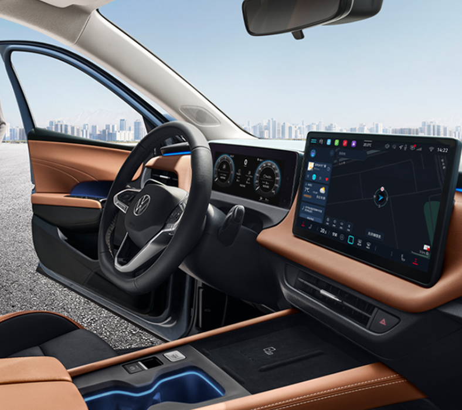
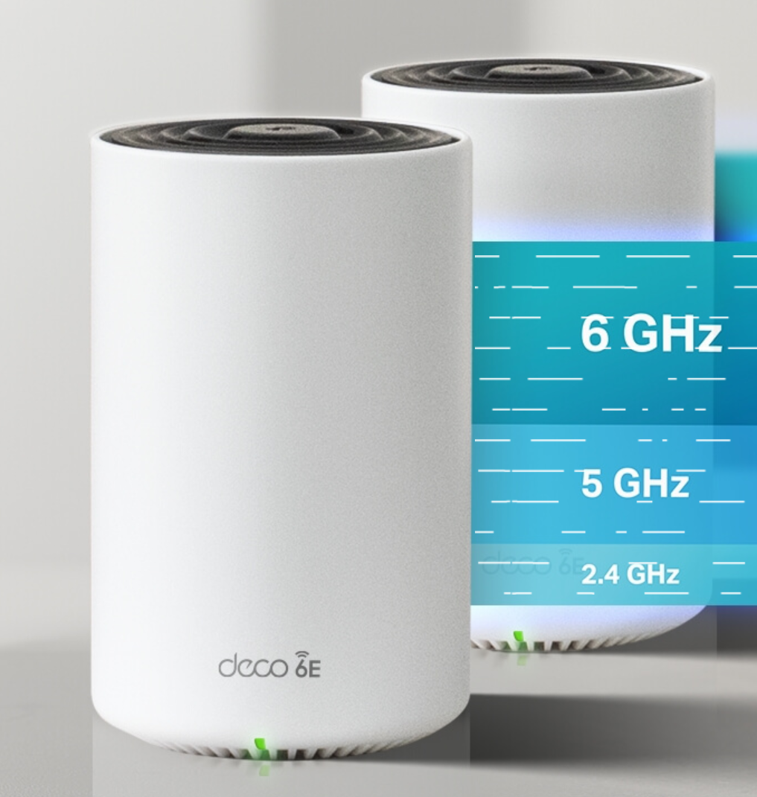
2023.07 - 2024.03
荣誉评价：试用期考核排名全部门第一（共 45 人），获评“消费产品研发处 2023 年度优秀新人”荣誉。
产品全流程参与与需求完善：深度参与 Deco 系列路由器从需求评审、开发、测试到产品交付的完整流程。从用户与技术两个角度反向推演需求的合理性，识别 PRD 中未覆盖的边界情况与潜在体验问题，推动需求完善，实现测试左移。
竞品分析与决策支撑：主导 Deco 与 ASUS、Amazon 等竞品的实验室对比测试，输出结构化竞品分析报告，包括实验数据、差距结论、原因及改进路径，推动客户端限速和带宽控制等多个功能及参数的决策。
市场反馈与产品改进：跟进 Deco 系列产品的内部 Beta 试用反馈与海外市场用户反馈，主导问题复现、测试数据采集与根因定位，协同研发团队推动修复，并将暴露的问题补充至后续版本的测试覆盖范围，形成产品改进闭环。
测试交付与自动化产出：累计负责 Deco 系列的 25 个项目，输出 2 个完整模块测试设计方案及配套的 300 余个测试用例和 30 余个自动化测试脚本，复用于多个项目的回归验证与性能测试。累计执行测试用例 4000 余个，提报有效 bug 150 个（中高风险问题 70 个），多次在产品发布前成功拦截关键风险项。
Projects
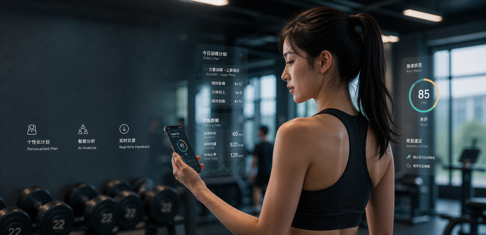
面向健身新手，将模糊目标转化为安全、个性化、可执行的 AI 健身建议。
关键结果：RAG faithfulness 提升 36%，违规输出减少 25%。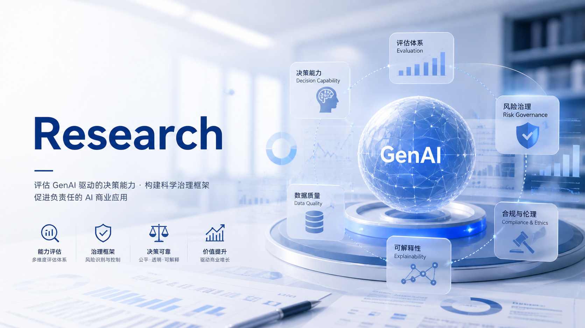
评估 ChatGPT、Gemini 等模型在商业分析中的能力边界，并设计人机协作治理框架。
关键结果：完成 8 轮盲测实验，提出三层决策分类和四层治理结构。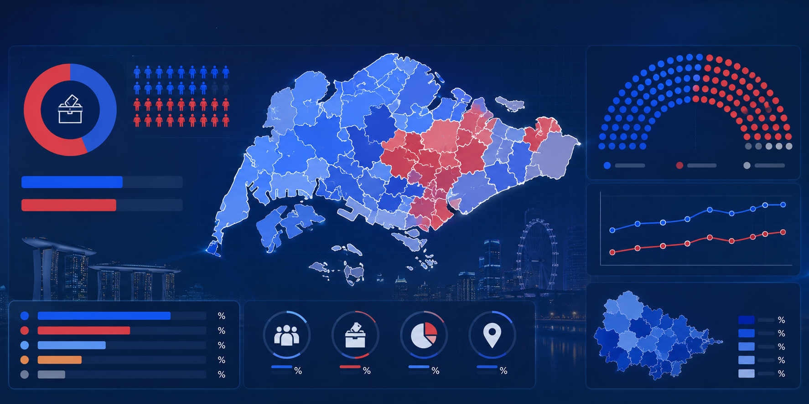
将选举数据组织成可探索的信息产品，帮助用户快速识别关键变量和变化趋势。
关键结果：完成公开 Tableau 交互看板，支持筛选探索与数据叙事。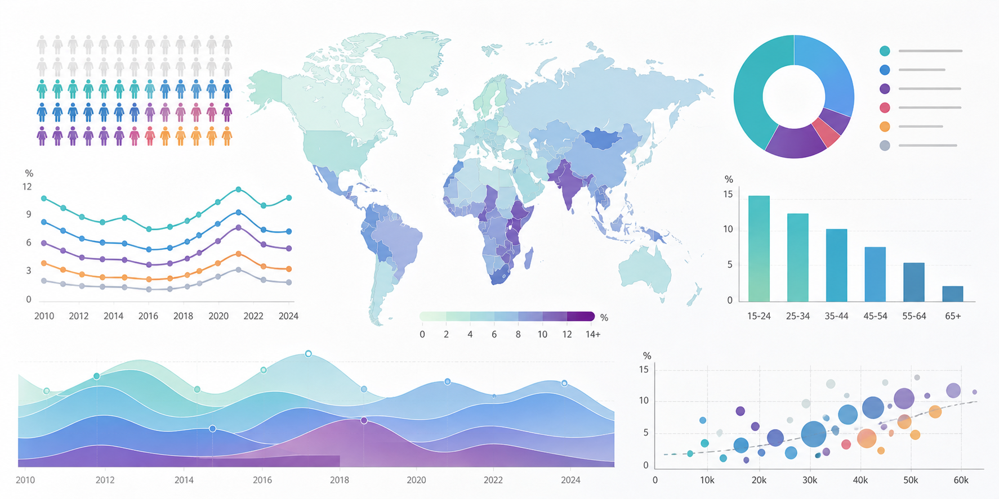
用交互式可视化降低用户理解失业数据在地区、时间与群体差异上的认知成本。
关键结果：完成可在线访问的 D3 交互叙事 Demo。探索用户特征预测与分层，为市场分群、服务推荐或资源配置提供决策支持。
关键结果：完成从数据处理、模型训练到评估解释的预测项目。分析商品关联关系，辅助零售场景下的陈列、捆绑销售和促销组合决策。
关键结果：将关联规则转化为商家可理解的商品组合与运营建议。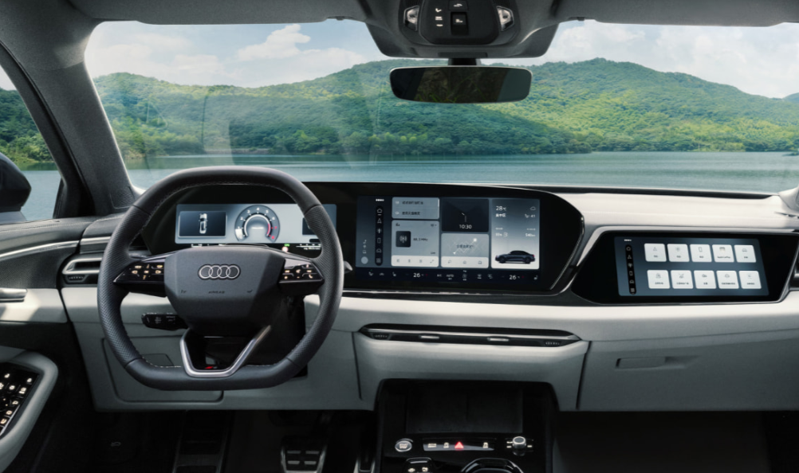
负责奥迪车型 AI 语音、车载商城、路书功能模块的需求管理与交付推进，覆盖 4 个车机平台、60 余个需求。
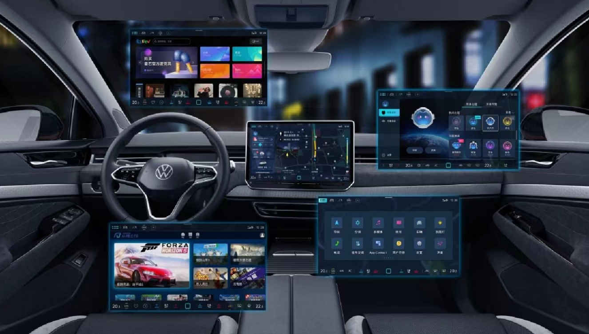
参与大众智能座舱 8 个基础服务模块建设，覆盖 6 款车型、4 个车机平台、20 个系统版本和中欧市场。
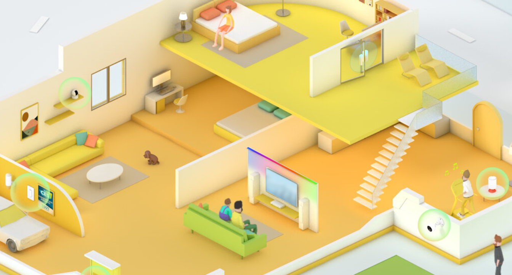
设计 TP-Link 智能家居生态扩展验证方案，提出产品优化建议，制定跨部门产品线之间的统一测试标准。
进行 Linux 限速算法分析，调研 4 款竞品，独立设计完整测试方案，并提供 5 条有效产品优化建议。
Why I Fit AI PM
从用户场景和业务问题出发，判断 AI 是否能真正解决问题或改善用户体验，将 AI 能力转化为具体的产品流程和解决方案
大模型存在幻觉、稳定性和评估困难等问题，需要考虑可信度、兜底机制和用户反馈闭环
关注任务完成率、采纳率、用户满意度等指标，具备数据驱动意识，使用数据评估产品效果并持续迭代优化
能够在业务、技术、设计和运营各角色之间对齐目标、澄清需求、拆解问题、推动 AI 产品高效落地
愿意主动关注与学习AI技术趋势和相关产品案例，并把这种兴趣转化为长期深耕 AI 产品的动力，不断成长
Awards
本科生奖学金
本科生奖学金
本科生奖学金
基于 RFID 系统的物品定位方法研究
试用期部门排名第一 (1/45)
Contact
联系方式：邮箱、电话/微信，期待进一步沟通